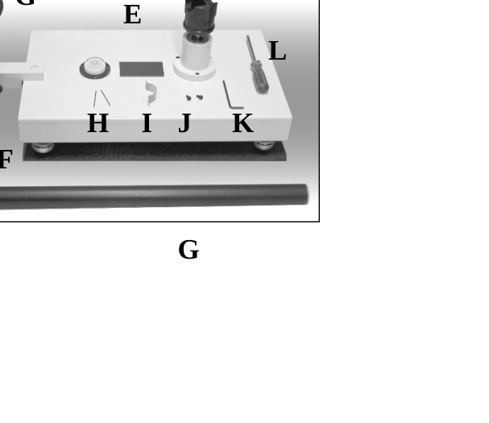
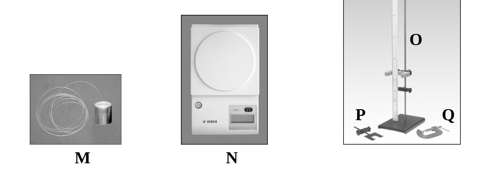
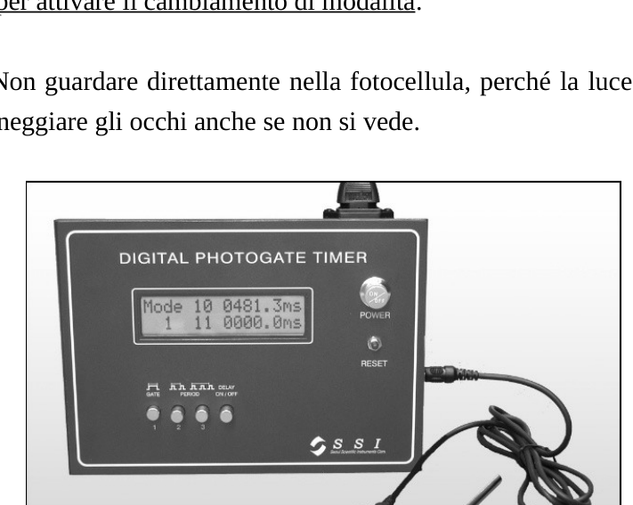
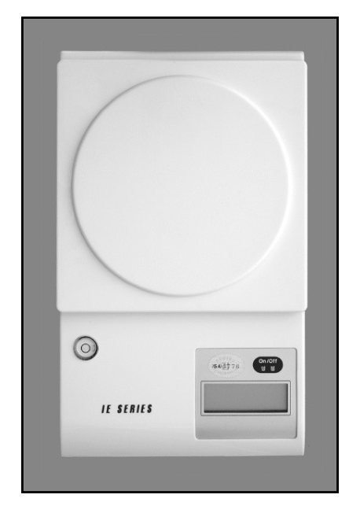
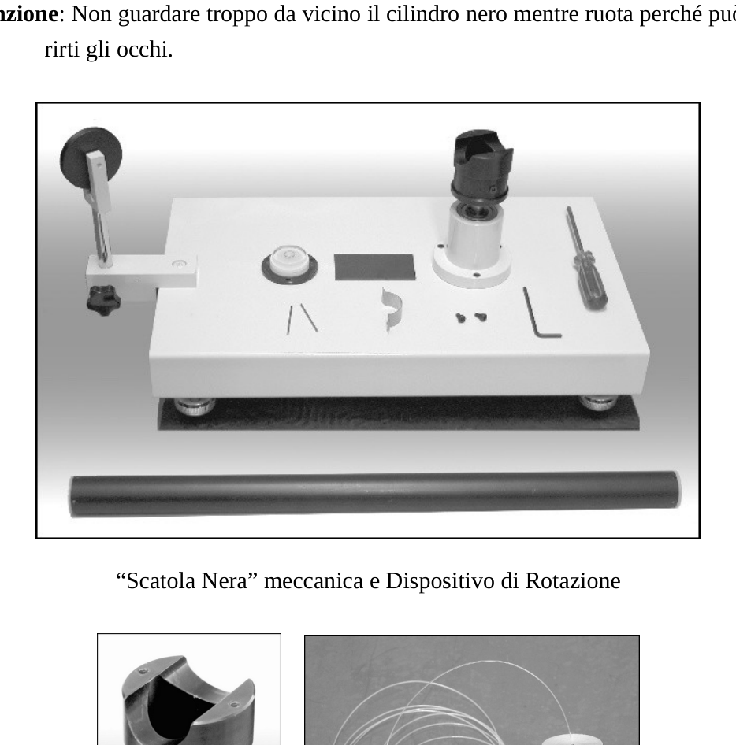
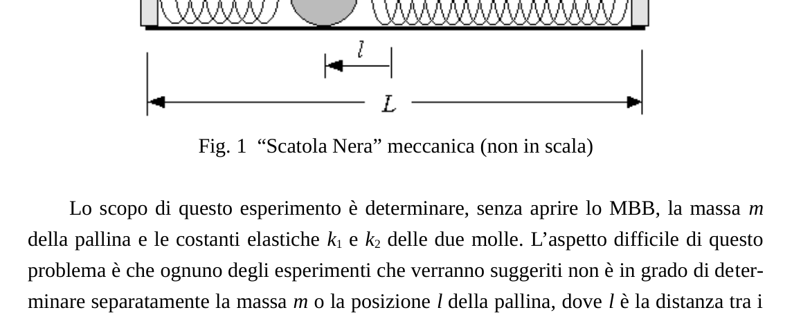
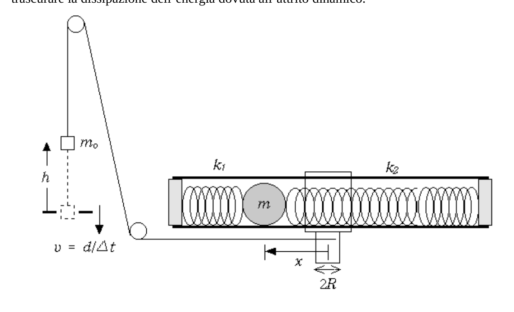
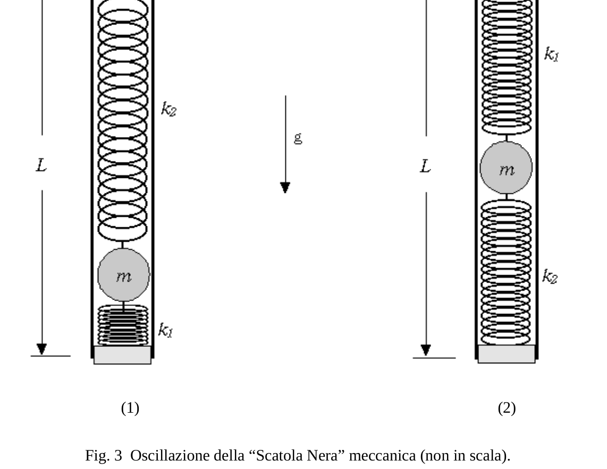

Experimental Competition / Question Page 1/13 35a Olimpiade Internazionale di Fisica Pohang, Corea 15 ~ 23 Luglio 2004 Prova Sperimentale Prova Sperimentale Lunedì, 1 Lunedì, 19 Luglio 2004 Luglio 2004 Leggere attentamente prima le seguenti istruzioni:
- Il tempo disponibile è 5 ore.
- Usa solamente la penna fornita.
- Usa solamente la pagina frontale dei fogli di scrittura. Sc ri vi solamente al
l’in
ter no
del riquadro
. 4. Oltre ai fogli di scrittura bianchi, ci sono i Fogli Risposta dove devi riepilogare i risultati ottenuti. 5. Scrivi sui fogli di scrittura bianchi i risultati delle misure fatte e tutto ciò ritieni utile per la soluzione del problema. Esprimiti principalmente con equazioni, numeri, schizzi e grafici; utilizza meno testo possibile. 6. Riempi i riquadri in cima ad ogni foglio di carta con il tuo Codice Paese (Country Code) e il tuo Numero Studente (Student Code). Inoltre su ciascun foglio bianco scrivi il numero progressivo di pagina (Page Number), e il numero totale di fogli di scrittura utilizzati (Total Number of Pages). Scrivere in cima ad ogni foglio il numero del problema e la lettera indicante la sezione del problema a cui si sta rispondendo. Se hai usato alcuni fogli di scrittura bianchi per appunti che non desideri vengano valutati, fai una grande X attraverso l’intero foglio e non includerli nella numerazione. 7. Al termine della prova, disponi tutti i fogli nel seguente ordine:
Foglio risposte (in cima)
I fogli di scrittura utilizzati, in ordine
I fogli che non desideri vengano valutati
Experimental Competition / Question Page 2/13
Fogli inutilizzati e il testo del problema (in fondo) 8. Non è necessario specificare l’incertezza sui valori ottenuti, ma il punteggio che otterrai terrà conto del loro scostamento dai valori attesi. 9. Inserisci i fogli nella busta e lascia ogni cosa sopra il tuo tavolo. Non è per
mes
so
por
tare fuori della stanza
alcun
foglio né alcun materiale usato nel
l’espe
ri men
to. Apparecchiatura
- Lista dei materiali disponibili Nome Quantità Nome Quantità A Cronometro a fotocellula 1 L Cacciavite 1 B Fotocellula 1 M Massa con cordicella 1 C Cavo di collegamento 1 N Bilancia elettronica 1 D “Scatola nera” meccanica (cilindro nero) 1 O Asta con riga millimetrata 1 E Dispositivo per rotazioni 1 P Supporto a forma di U 1 F Tappetino di gomma 1 Q Morsetto a C 1 G Puleggia 2 Righelli (0.50 m, 0.15 m) 1 per tipo H Spillo 2 Calibro 1 I Piastrina a forma di U 1 Forbici 1 J Vite 2 Filo 1 K Chiave a brucola (esagonale, a forma di L) 1 Pezzi di ricambio (cordicella, filo, spillo, vite, chiave a brucola) B C A D E F G H I J K L G
Experimental Competition / Question Page 3/13 M N O P Q
Experimental Competition / Question Page 4/13 2. Istruzioni per l’uso del cronomentro a fotocellula La fotocellula è formata da un LED a infrarossi e un fotorivelatore. Collegando la fotocellula al Cronometro si può misurare la durata del tempo sfruttando le interruzioni della luce infrarossa che raggiunge il sensore. ‧ Accertati che la fotocellula sia collegata al Cronometro. Accendi il cronometro premendo il tasto contrassegnato con “POWER”. ‧ Per misurare l’intervallo di tempo trascorso nel passaggio di un unico oggetto, premi il tasto contrassegnato con “GATE”. Usa la modalità “GATE” per misure di velocità. ‧ Per misurare intervalli di tempo tra due o tre successivi passaggi, premi il corrispondente tasto fra i due contrassegnati con “PERIOD”. Usa la modalità “PERIOD” per misurare tempi di oscillazione. ‧ Se il tasto “DELAY” è schiacciato, il Cronometro evidenzia il risultato di ciascuna misura per 5 secondi e poi si predisponde per una nuova misura. ‧ Se il tasto “DELAY” non è schiacciato, il Cronometro mostra il risultato della precedente misura fino a quando la successiva non è completata. ‧ Dopo ogni cambiamento di posizione di un tasto, premi il tasto “
RESET
” una
vol ta per attivare il cambiamento di modalità
. Attenzione: Non guardare direttamente nella fotocellula, perché la luce infrarossa può danneggiare gli occhi anche se non si vede.
Experimental Competition / Question Page 5/13 Fotocellula, Cronometro e cavo di connessione 3. Istruzioni per l’uso della bilancia elettronica ‧ Regola i piedini d’appoggio per rendere stabile la bilancia. (Anche se è incorportata una livella, non è necessario che la bilancia sia perfettamente orizzontale.) ‧ A bilancia scarica, accendila premendo il tasto “On/Off”. ‧ Poni l’oggetto da pesare sul piano d’appoggio rotondo: la sua massa sarà evidenziata in grammi. ‧ Quando non c’è nulla sul piano d’appoggio, la bilancia si spegne automaticamente in circa 25 secondi. Bilancia
Experimental Competition / Question Page 6/13 4. Istruzioni per l’uso del Dispositivo per rotazioni ‧ Metti il dispositivo sopra il tappetino di gomma e regola i piedini d’appoggio per ottenere una base stabile e in posizione abbastanza orizzontale. ‧ Monta la “Scatola Nera” meccanica (cilindro nero) alla sommità del blocco rotante fissandola mediante la piastrina ad U e due viti. Usa la chiave a brucola per serrare le viti. ‧ La cordicella attaccata alla massa deve essere fissata alla vite che si trova da un lato del blocco rotante. Usa il cacciavite per fissarla. Attenzione: Non guardare troppo da vicino il cilindro nero mentre ruota perché può ferirti gli occhi. “Scatola Nera” meccanica e Dispositivo di Rotazione
Experimental Competition / Question Page 7/13 Blocco rotante Massa con cordicella La “Scatola Nera” meccanica [Scopo della prova] Trovare la massa di una pallina e la costante elastica di due molle che si trovano nella
“ Scatola Nera
” meccanica.
Informazioni generali sulla “Scatola Nera” La “Scatola Nera” meccanica (MBB) è formata da un tubo cilindrico di colore nero che contiene una pallina rigida attaccata a due molle, come mostrato in Fig. 1. Le due molle sono identiche in tutto tranne che nel numero di spire. La massa delle molle può essere trascurata e lo stesso vale per la loro lunghezza nel caso in cui sono completamente compresse. Il tubo è omogeneo e chiuso alle estremità con due tappi identici. Ogni tappo è infilato all’interno del tubo per un tratto di . Il raggio della pallina è di ed il diametro interno del tubo è . L’accelerazione di gravità vale . C’è un attrito tra la pallina e la superficie interna del tubo. Fig. 1 “Scatola Nera” meccanica (non in scala) Lo scopo di questo esperimento è determinare, senza aprire lo MBB, la massa m della pallina e le costanti elastiche e delle due molle. L’aspetto difficile di questo problema è che ognuno degli esperimenti che verranno suggeriti non è in grado di determinare separatamente la massa o la posizione della pallina, dove è la distanza tra i centri geometrici del cilindro e della pallina quando lo MBB è posto in quiete in un piano orizzontale e la pallina è ferma in una posizione che non dipende dall’attrito. Usa i simboli elencati di seguito per rappresentare le grandezze fisiche di interesse nel problema
. Se ritieni di dover usare altre garndezze fisiche, usa simboli diversi da
Experimental Competition / Question Page 8/13 questi per evitare confusione. Simboli fisici assegnati Massa della pallina: Raggio della pallina: () Massa dello MBB, esclusa la pallina: Lunghezza del cilindro nero: Lunghezza della parte infilata nel cilindro di ciascun tappo: () Distanza dal centro di massa dello MBB al centro geometrico del cilindro: Distanza fra il centro della pallina e il centro geometrico del cilindro: (oppure in situazione di equilibrio con lo MBB in posizione orizzontale) Accelerazione di gravità: () Massa attaccata alla cordicella: Velocità della massa: Spostamento verticale in basso della massa: Raggio del blocco rotante nella zona in cui deve essere avvolta la cordicella: Momenti di inerzia: , , , ,
p.2 — Foto dei componenti dell’apparato (G)

p.3 — Cordicella M, bilancia N, supporto O P Q

p.4 — Cronometro fotoelettrico digitale

p.5 — Bilancia elettronica

p.6 — Scatola Nera meccanica e dispositivo di rotazione

p.7 — Fig.1 schema Scatola Nera meccanica

p.10 — Fig.2 schema rotazione Scatola Nera

p.12 — Fig.3 due configurazioni di oscillazione

Topic: Rotational Dynamics, Oscillations & Waves, Newtonian Mechanics Metodi: Simple Harmonic Motion Analysis, Torque & Angular Momentum Analysis, Hooke’s Law, Experimental Data Analysis, Free-Body Diagram Competenze: Experimental Data Analysis, Mathematical Modeling, Measurement & Instrumentation Objects: Cylinder, Ball, Spring, Pulley, String Fonte: Testo (PDF) — p.1
Experimental Competition / Question Page 1/13 35th International Physics Olympiad The following is the list of official languages of the Republic of Korea: 15 ~ 23 July 2004 The test shall be carried out in accordance with the following conditions: The test shall be carried out in accordance with the following conditions: Monday, 1 January Monday, 19 July 2004 July 2004 Please read carefully the following instructions first:
- The time available is five hours.
- Use only the provided pen.
- Use only the front page of the writing sheets. Sc The Commission shall adopt a decision on the
l’in
The following is the list of the countries: no
of the box
. 4. In addition to the white paper, there are the Answer Sheets where you have to summarize the results. 5. Write on white paper the results of the measurements you have taken and all of this you consider useful for solving the problem. Expressed mainly by equations, numbers, sketches and graphics; use as little text as possible. 6. Fill in the boxes at the top of each sheet of paper with your Country Code (Country Code) Code) and your Student Code. Also on each white sheet Write the progressive page number and the total number of pages of The total number of pages used. Write the problem number and the letter indicating the section of the problem being answered at the top of each sheet. If you used some white paper for notes you don’t want to If they’re evaluated, you make a big X through the whole sheet and don’t include them in the numbering. 7. At the end of the test, arrange all the sheets in the following order:
Sheet of answers (top)
The paper used, in order
Sheets you don’t want to be evaluated
Experimental Competition / Question The Commission has decided to extend the period of validity of the decision.
Unused sheets and the problem text (below) 8. It is not necessary to specify the uncertainty of the values obtained, but the score you will get will take into account their deviation from the expected values. 9. Put the leaves in the envelope and leave everything on your table. It’s not for
Other
so
for
♪ ♪ Get out of the room ♪
No
paper or any material used in the
The European Union
Other
to. Equipment
- List of materials available Name of the person Quantity Name of the person Quantity A Other, not further worked than hot-rolled 1 L Slaves 1 B The photocell 1 M Other, of a kind used for the manufacture of goods of heading 8106 1 C Connecting cable 1 N Electronic balancing 1 D Black box mechanical (black cylinder) 1 O Mill-line milling machines 1 E Rotary device 1 P U-shaped support 1 F Other, of a width of not more than 30 mm 1 Q C-section of the marrow 1 G Cleaning 2 The following is the list of the main types of waste: 1 per type H I ‘ll wash it . 2 Other, not further worked than cut 1 I U-shaped plate 1 Other 1 J The speed 2 Wire 1 K A key with a “shaped” hexagon 1 Other, of a kind used for the manufacture of goods of heading 8401 The following is the list of the following: B C A D E F G H I J K L G
Experimental Competition / Question The Commission’s proposal for a directive on the protection of workers’ rights M N O P Q
Experimental Competition / Question The Commission has decided to extend the period of validity of the proposal. 2. Instructions for the use of photocell chronometer The photocell is made up of an infrared LED and a photorevelator. By connecting the photocell to the chronometer, the duration of time can be measured by using the interruptions of infrared light reaching the sensor. ‧ Make sure the photocell is connected to the chronometer. Turn on the timer. by pressing the button marked with POWER. ‧ To measure the time interval spent in the passage of a single object, Press the key marked with GATE. Use the GATE mode for measurements I’m not going to be able to get any speed. ‧ To measure time intervals between two or three successive steps, press the corresponding key between the two marked with PERIOD. Use the mode Period to measure oscillation times. ‧ If the DELAY button is pressed, the Timekeeper highlights the result of each measurement for 5 seconds and then prepares for a new measurement. ‧ If the DELAY key is not pressed, the Timetable will show the result of the the previous measure until the next one is completed. ‧ After each change in position of a button, press the button
The following information shall be provided:
One
Flights to activate the change of mode
. Attention: Do not look directly into the photocell, because infrared light can You can damage your eyes even if you can’t see.
Experimental Competition / Question The Commission has not yet adopted a proposal. Photocell, Timetable and connection cable 3. Instructions for the use of the electronic balance sheet ‧ Adjust the support legs to keep the balance stable. (Although a level is included, the balance sheet does not have to be perfectly horizontal.) ‧ When the balance is off, turn it on by pressing the On/Off button. ‧ Place the object to be weighed on the rounded support plane: its mass will be expressed in grams. ‧ When there is nothing on the support plane, the balance will automatically turn off in about 25 seconds. Balance of payments
Experimental Competition / Question The Commission has not yet adopted a proposal. 4. Instructions for use of the rotary device ‧ Place the device over the rubber mat and adjust the supporting legs to obtain a stable base and in a fairly horizontal position. ‧ Mount the mechanical Black Box (black cylinder) at the top of the rotating block by attaching it to the U plate and two screws. Use the key to the lock. to close the screws. ‧ The rope attached to the mass must be attached to the screw located by a side of the rotating block. Use the screwdriver to fix it. Attention: Do not look too closely at the black cylinder as it rotates because it can hurt your eyes. Black box mechanical and rotary device
Experimental Competition / Question The Commission’s proposal for a directive on the protection of workers’ rights Rotary block Mass with rope The mechanical black box [Taste purpose] Find the mass of a ball and the elastic constant of two springs in the
Black box
Mechanics.
General information on the Black Box The mechanical Black Box (MBB) is made up of a cylindrical tube of black color which contains a rigid ball attached to two springs, as shown in Fig. 1. The two The springs are identical in everything except the number of spires. The mass of the springs can The Commission has not yet established a specific methodology for the calculation of the total weight of the products. The tube is homogeneous and closed at the ends with two identical lids. Each cap is inserted into the tube for a stretch of . The radius of the ball is The pipe shall be of and the inner diameter of the pipe shall be . The acceleration of gravity is . There’s a friction between the ball and the inner surface of the tube.
- What? 1 Machine black box (not in scale) The purpose of this experiment is to determine, without opening the MBB, the mass m The ball and the elastic constants and of the two springs. The difficult aspect of this problema è che ognuno degli esperimenti che verranno suggeriti non è in grado di determinare separatamente la massa o la posizione della pallina, dove è la distanza tra i The cylinder and ball geometric centers when the MBB is placed at rest in a The ball is flat and the ball is stationary in a position that does not depend on friction. Use the symbols listed below to represent physical quantities of interest In the problem
. If you feel you need to use other physical garnishes, use symbols other than
Experimental Competition / Question The Commission has not yet adopted a proposal. These are to avoid confusion. Physical symbols assigned Ball mass: The ball beam: () Mass of the MBB excluding ball: The length of the black cylinder: Length of the part inserted into the cylinder of each lid: () Distance from the centre of mass of the MBB to the geometric centre of the cylinder: Distance between the centre of the ball and the geometric centre of the cylinder: (or ) in a position of balance with the MBB in a horizontal position) Accelerazione di gravità: () Mass attached to the rope: The mass speed: Vertical displacement below the mass: The radius of the rotating block in the area where the rope is to be wrapped: Momenti di inerzia: , , , ,
p.2 — Foto dei componenti dell’apparato (G)
p.3 — Cordicella M, bilancia N, supporto O P Q
p.4 — Cronometro fotoelettrico digitale
p.5 — Bilancia elettronica
p.6 — Scatola Nera meccanica e dispositivo di rotazione
p.7 — Fig.1 schema Scatola Nera meccanica
p.10 — Fig.2 schema rotazione Scatola Nera
p.12 — Fig.3 due configurazioni di oscillazione
Topic: Rotational Dynamics, Oscillations & Waves, Newtonian Mechanics Metodi: Simple Harmonic Motion Analysis, Torque & Angular Momentum Analysis, Hooke’s Law, Experimental Data Analysis, Free-Body Diagram Competenze: Experimental Data Analysis, Mathematical Modeling, Measurement & Instrumentation Objects: Cylinder, Ball, Spring, Pulley, String Fonte: Testo (PDF) — p.1